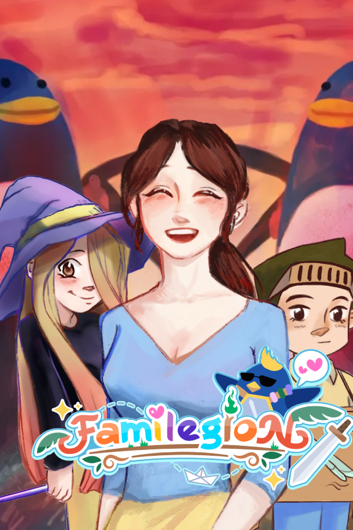

Familegion
My first foray into writing and designing a procedural narrative was both exciting and challenging! Unlike a classic choose-your-own-adventure, this game has multiiple narrative threads that would proceed at different speeds based on a player's performance in a roguelite loop.
Highlights
- Dynamic Narrative Development: Designed & wrote multiple plotlines that would proceed based on the player's performance and achievements during roguelite runs.
- Difficulty Balancing: Balanced & designed the roguelite run based on data analysis & player feedback to ensure player engagement for players of all skill levels, as well as continued story progression for the player.
- Writing for multiple demographics: Wrote the narrative in a way simple enough for children to enjoy, but with some fun hidden jokes for adults.
Writing Samples
Example here